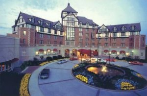

version of this page
 Press here for a printer-friendly
Press here for a printer-friendly
version of this page
Nestled among the rolling Blue Ridge Mountains, Roanoke combines the convenience of a major city with a friendly small-town atmosphere. Minutes from the Blue Ridge Parkway, the Appalachian Trail and Smith Mountain Lake, Roanoke provides many opportunities for outdoor recreation. Local tourism centers round the natural beauty of the area, the Appalachian mountain culture, and the history of the American South.

Crossing the railroad tracks on an enclosed pedestrian bridge, the visitor
enters a thriving revitalized downtown with restaurants, coffee shops and
entertainment all available in easy walking distance. Downtown Roanoke is
also home to
the historic Farmer's Market, the oldest such market in continuous use
in Virginia.
Produce, flowers, local crafts and mountain delicacies are all available
on a stroll through the market, as is the friendly society of the vendors.
While at the conference, go here and visit Virginia Wineries, the Wilderness in Bottom Creek George Hike, or a recreation of the life in Virginia in the old times.
The Roanoke airport is served by US Airways, Continental, Delta, Northwest and United. US Airways and Delta have been selected as official carriers for JCDL01, and are offering discounted fares. Both US Airways and Delta offer a 10% discount on unrestricted round-trip coach fares and a 5% discount on certain other fares. For reservations on US Airways you or your travel agent can call the US Airways Group and Meeting Reservation Office toll-free at 877.874.7687 and refer to Gold File #55661791. For Delta reservations, call Delta Meeting Network Reservations at 800.241.6760 and refer to File Number 172531A.
Visitors may alternatively choose to arrive at Greensboro Airport (about 2 and half hours from the conference by car) or one of the airports in the metropolitan Washington, D.C. area (about 4 and half hours). There is no public transportation available from either airports, but those who choose to rent cars may find the excursion enjoyable. Roanoke is located in southwestern Virginia at the intersection of Interstate 81 (milepost 144) and US 220. Driving from the North, the route passes through the scenic Shenandoah Valley of Virginia, and includes such notable sites as Thomas Jefferson's Monticello, Natural Bridge, and the town of Lexington. The route southwest of Roanoke passes through the spectacular scenery of the Blue Ridge Mountains. Northwest US 460 follows the New River out of West Virginia and passes through Blacksburg, home of Virginia Tech, one of the conference sponsors.Travelers with leisure time are also encouraged to explore the Blue Ridge Parkway, America's premier scenic byway. Roanoke is at milepost 120 on the Parkway, between the Peaks of Otter and Mabry Mill.
(A Doubletree Hotel; see http://www.doubletreehotels.com/)
Single or double rooms cost $94/night plus tax as long as the conference rate is available (i.e., until room block is exhausted or May 15, whichever comes first), if you mention "JCDL 2001". Hotel rooms on the "Club Floor" have individual Ethernet ports; if you are interested in one of these, please inform the Hotel when making your reservation. These are available on a first-come-first -served basis, so register as early as possible.
Additional lodging is available in the area, but only at some distance from the conference hotel. Hotel Roanoke runs a free shuttle to and from the Roanoke airport, leaving every half hour on the quarter hour.
617 S. Jefferson Street • Downtown Roanoke, VA
For reservations call 1-800-303-0988, Monday -Friday 8:30 AM - 5:00 PM EST
JCDL '01 welcomes the historic Patrick Henry Hotel as our second official lodging provider. From the caryatids decorating the overhung second floor to the oversized rooms with functioning windows, the Patrick Henry has the charm of a grand hotel in a convenient location about 8 blocks away from the Hotel Roanoke & Conference Center, along well-lit and level streets through the center of downtown Roanoke.
Rooms are available at conference rate from Sunday through Thursday nights: single rooms, $79/night; doubles, $89/night. Kings, suites and mini-suites are also available. Most rooms have kitchenettes. Complimentary transportation is provided to and from the Roanoke Airport. Please inform the reservations staff that you are with the "Joint Conference on Digital Libraries."
Due to unprecedented attendance, JCDL has expanded to a third hotel. The Holiday Inn Express is a recently constructed facility within walking distance of the Hotel Roanoke. All rooms have inside access. Doubles and king rooms are available at a conference rate of $68 / night, including a complimentary breakfast bar. All rooms have coffee makers, hair dryers and irons; some have microwaves and refrigerators. To make reservations, call (540) 982-0100 and mention JCDL.
Directions: From I-81 or US 220 take I-581 into Roanoke. Get off at Exit 4W, take an immediate left onto Gainesboro Road and a right into the Holiday Inn Express parking lot. Air travelers: the Express has no shuttle. Limousine and taxi service are available at the airport, but please check this page before you leave in case we can arrange something better.